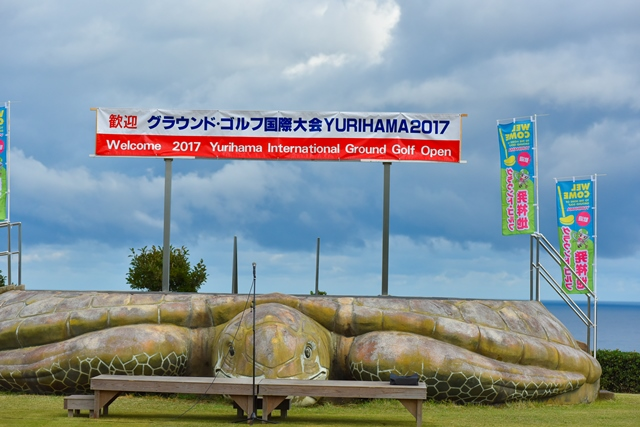
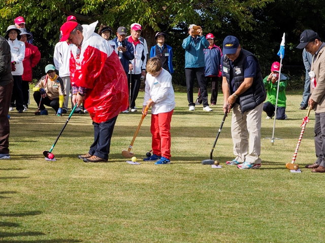
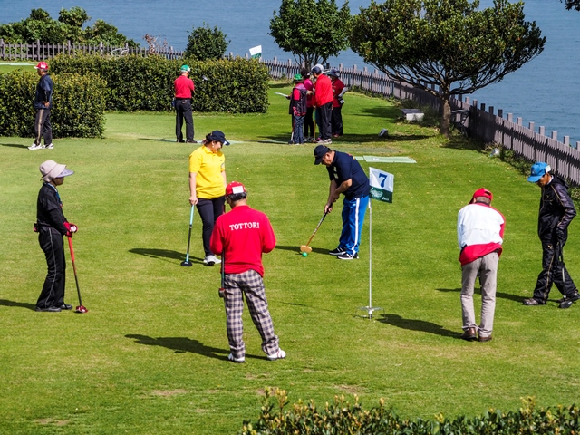

Historia Ground Golfa w Polsce
Ground Golf do Polski sprowadził dr Och Bataa. Pierwszy oficjalny mecz na terenie Polski odbył się w
2017 roku (dodać zdjęcie znad Wisły)
Jednakże już w 2015 roku reprezentanci Polski z dr. Ochem Bataa (który zorganizował grupę graczy)
uczestniczyli w turnieju Ground Golfa w Japonii (dodać zdjęcia).



Jesienią 2016 roku narodził się pomysł powołania Klubu Ground Golfa na terenie Polski. Grupę powołał
dr. Och Bataa a w grupie byli Erdenehimeg Nomondalai, Amar Och, Edwin Truksa, (które nazwiska
dodać?) Na wiosnę 2017 roku pod przewodnictwem dr. Och Bataa zebrała się grupę sympatyków celem
powołania stowarzyszenia Klub Sportowy AGI. Która to grupa odbyła swoje pierwsze zebranie w dniu
12 czerwca 2017 roku w al. Ujazdowskich w Warszawie (dodać zdjęcia).
Wiosną i latem 2017 roku odbywały się już regularnie mecze Ground Golfa w Konstancinie-Jeziornej,
w Wyszkowie i innych miejscach.
W dniu 20 września 2017 roku Klub Sportowy AGI został zarejestrowany przez Sąd Rejonowy dla m.
st. Warszawy w Warszawie, XIII Wydział Gospodarczy Krajowego Rejestru Sądowego.
W Październiku 2017 roku Polska drużyna reprezentowała nasz kraj na Mistrzostwach Ground Golfa
w Japonii. Jeden z reprezentantów Polski zdobył dwa Złote Puchary. (Skład drużyny – czy ludzie się
zgodzą aby napisać i zdjęcia)